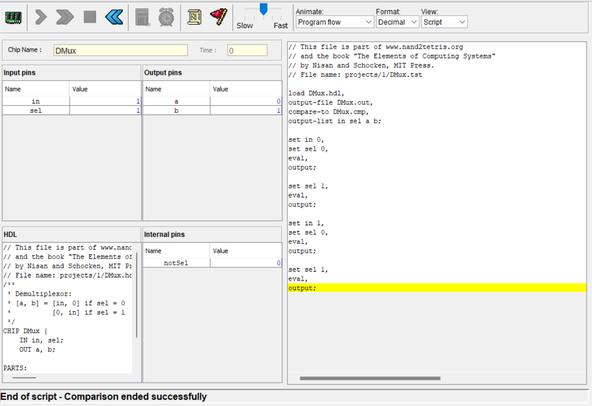
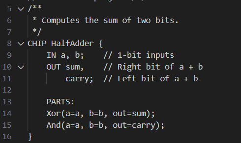
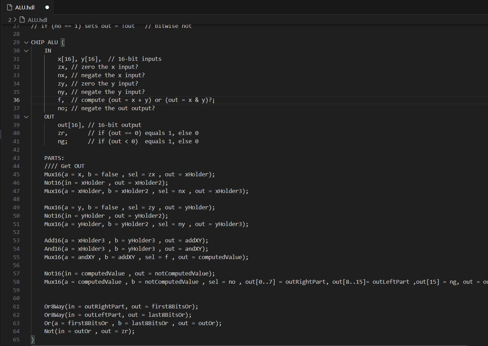
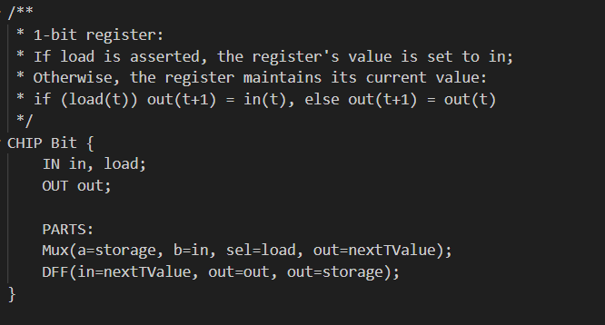
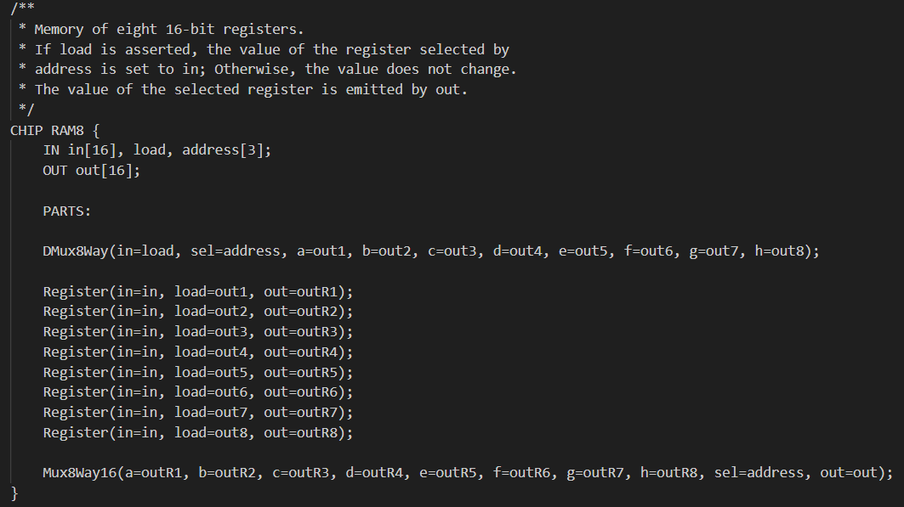
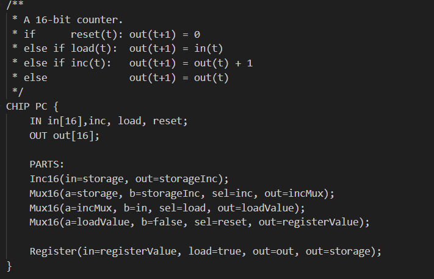

Back to B-Aran portfolio
Nand2Tetris
Building a general-purpose computer system and a modern software hierarchy from the ground up.
Open-Source project
Insights
Boolean logic implementing the basic 16 chips in Hardware Description Language (HDL), also Multi Buses : Nand (given) - Not - And - Or - Xor - Mux - DMux - Not16 - And16 - Or16 - Mux16 - Or8Way - Mux4Way16 - Mux8Way16 - DMux4Way - DMux8Way
Developed on a hardware simulation environment
Built boolean arithmetic logic chips, also with signed numbers
Dveloped a basic ALU (Arithmetic Logic Unit)
Understood Von Neuman's computer architecture
Developed with bearing in mind with time and cycles, reducing time complexity
Implemented bit register and RAM memories (different sizes)
Implemented the Program Counter
Footage
     